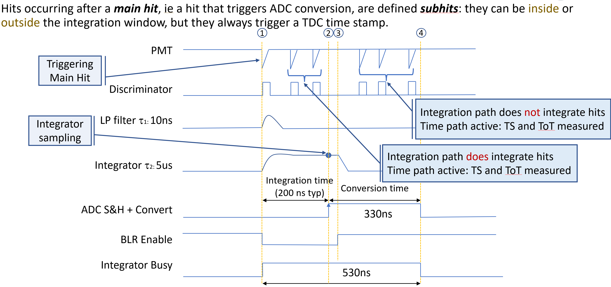
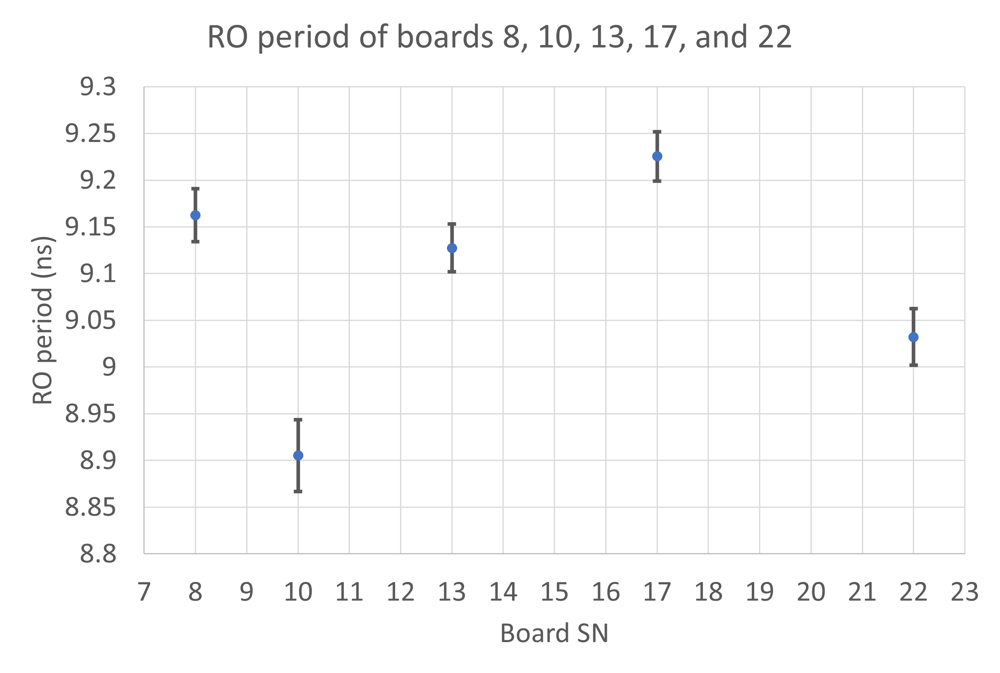
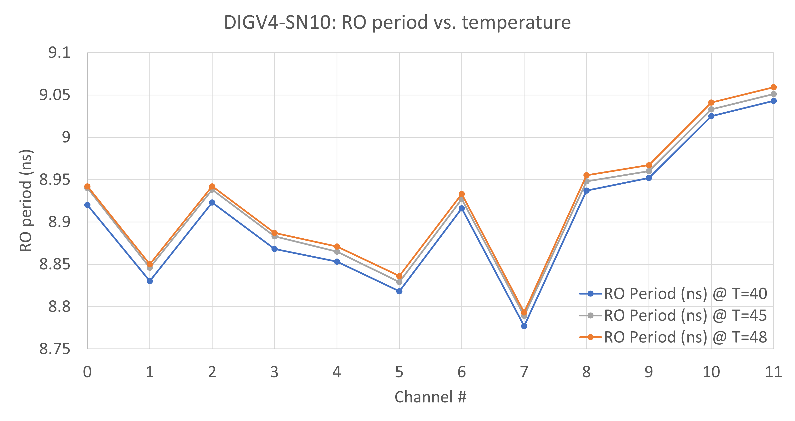

DAQ Parameters#
This page defines the parameters that must be set to allow acquisition.
Integration time#
When the pmt pulse crosses the threshold and the discriminator signal becomes active, the FPGA disables the BLR switch to allow integration to take place. This procedure takes around 15ns and is fixed by fpga logic: it must be as fast as possible to avoid "cutting" the start of the pulse and that's why there is the analog delay line. The integration time, ie the parameter you can control by FW, is the width of the BLR enable signal: the sampling of the integrator occurs immediately before the BLR switch is re-enabled.

The hit that causes the ADC process to start is called main hit; all the hits which follow the main hit and fall inside the integration window will be integrated and contribute to the total measured charge; those hits outside the integration window but occurring during the conversion process, ie the dead time of digitization, will not be integrated.
The subhit FW returns timing information about the main hit and the subhit: the time stamp and the duration, ie the pulse width, are recorded allowing to disentangle the contribution of single hits to the ADC charge based on the Time over Threshold (ToT) method.
Ring Oscillator clock#
To have a fixed latency between the trigger produced by fast comparator and the integration gate, a ring oscillator scheme is applied.
The comparator signal triggers the start of the ring oscillator, whose oscillation frequency depends on the FPGA. Since the layout of the logic which implements the oscillator has been manually fixed in the device, the frequencies are almost the same for each ID and OD channel.
The results of measurements give a 9.2ns period for the ring oscillator, with a resolution of ~2ps; the channel-to-channel variability is ~300ps peak-to-peak, as shown in figure.

There is also a small temperature dependance, as shown in figure

Each ring oscillator clock is local and is not widely distributed into the FPGA. Since it's frequency can depend on clock tree loading, the logic driven by it as been reduced to a minimum: only integration time window, ie the activation-disactivation of the BLR switch, and the convert signal are driven by RO clock.
All the other front-end signals are generally driven by a 96MHz local clock.
Integration time setting#
Keeping in mind the results of previous section, ie that the ring oscillator clock is about 9.2ns, the integration time can be set properly using the following formulas.
The integration time for ID can be calculated as follows:
ID integration : n * 9.2ns + 22.5ns
The best value for a 200ns integration window is n=19:
IT_ID = 19 * 9.2ns + 22.5ns ~= 198.0ns
The OD does not have a true charge integrator circuit as for the ID; instead, there is an analog circuit that filters and reshapes the input signal. The best point to have a measurement of input charge is at the maximum of the reshaped signal.
The integration time for OD can be calculated as follows:
OD integration : n * 9.2ns + 29.5ns
The best value, as for UK group studies, is after 150ns from the trigger; the optimal integration value is n=13:
IT_OD = 13 * 9.2ns + 29.5ns ~= 149.1ns
The size of integration time register is 8 bits for both cases, ID and OD.
Slow control command#
The slow control command which sets the integration time is the following:
SET DIGx INTTIME ch val
where:
xis the digitizer number (0/1)chis the digitizer channel number (0-17 or ALL)valis the integration time value ranging from 0 to 255 in 10.4ns units.
Dead time#
Dead time can be added to conversion disabling trigger detection for a programmable number of clock cycles after the end of ADC conversion. The time resolution of the dead time is ~10.4ns, since it is driven by the ADC clock which is a 96MHz clock.
The size of dead time register is 6 bits.
Slow control command#
The slow control command which sets the integration time is the following:
SET DIGx DEADTIME ch val
where:
xis the digitizer number (0/1)chis the digitizer channel number (0-17 or ALL)valis the dead time value ranging from 0 to 63 in 10.4ns units.
Threshold#
This parameter represents the DAC value which sets the voltage used by the fast comparator of the front-end circuit to check the level of input signal.
This value should be set at -1mV by a specific calibration procedure that must be run on each channel of each board specifically.
This value depends on many parameters: circuit components, temperature, 5VA setting.
The size of threshold register is 12 bits.
Slow control command#
The slow control command which sets the integration time is the following:
SET DIGx DISCTRES ch val
where:
xis the digitizer number (0/1)chis the digitizer channel number (0-17 or ALL)valis the fast discriminator threshold value ranging from 0 to 4095.